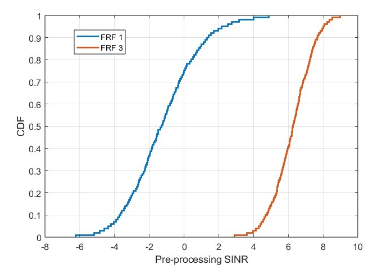

Connection density
For connection density evaluations, we follow the procedure mentioned in Report ITU-R M.2412 for only full buffer scenario. We obtain the CDF of pre-processing SINR for UL transmissions from SLS with both FRF =1 and FRF=3.
Evaluation Results
| Parameters | Min. Requirement | Values | ||
|---|---|---|---|---|
| For FRF = 1 | For FRF = 3 | |||
| Service Profile | Full buffer | Full buffer | ||
| 1 percentile pre-processing SINR | -5.0023 dB | 5.5930 dB | ||
| System Bandwidth (W) | 0.18 MHz | 0.18 MHz | ||
| 99th Percentile Delay | 0.265 s |
0.035 s |
||
| Inter-packet arrival time (Option-1) | 1 message/2 hours/device | 1 message/2 hours/device | ||
| Inter-packet arrival time (Option-2) | 1 message/day/device | 1 message/day/device | ||
| Connection Density (Devices/km²) | 500 |
541 (Option-1) | 1994 (Option-1) | |
| 6498 (Option-2) | 23,928 (Option-2) |

Observation-1:
The connection density requirement according to Report ITU-R M.2514 is 500 Devices/km2 and 99th percentile delay requirement is less than 10s. We see that both the requirements are met for the case of mMTC NB-IoT over NTN for both FRF 1 and 3 with different inter-packet arrival times.
Results for eMTC over NTN
| Parameters | Min. Requirement | Values | ||
|---|---|---|---|---|
| For FRF = 1 | For FRF = 3 | |||
| Service Profile | Full buffer | Full buffer | ||
| 1 percentile pre-processing SINR | -5.1809 dB | 3.6187 dB | ||
| System Bandwidth (W) | 1.08 MHz, 180 KHz | 1.08 MHz, 180 KHz | ||
| 99th Percentile Delay | 0.0341 s |
0.0042 s |
||
| Inter-packet arrival time | 1 message/2 hours/device | 1 message/2 hours/device | ||
| 1 message/day/device | 1 message/day/device | |||
| Connection Density (Devices/km²) | 500 |
2629, 438 |
9306, 1551 | |
| 31554, 5259 | 111,672 , 18,612 |
Observation-2:
(eMTC over NTN): The connection density requirement of 500 Devices/km2 and 99th percentile delay requirement of less than 10s is met for FRF=3 for all cases i.e., different system bandwidths and different inter-packed arrival time. For FRF = 1, the delay and connection density requirements are met for all configurations except for configuration with system bandwidth = 180 KHz and inter-packet arrival time of 1 message/2 hours/ device.